EyeRobot 2.0: Active Visual Fixation for Precise Manipulation without Wrist Cameras
1UC Berkeley 2Amazon FAR 3Stanford University
∗Equal contribution, random order †Equal advising
Do robots need wrist cameras?
Behavior cloning systems today overwhelmingly rely on wrist cameras for fine-grained manipulation. Why? Their high-resolution gripper-centric observations improve precision and spatial reasoning via a sort of physical attention where it matters. We believe that these benefits can be obtained from a human-inspired physical attention system: one using two active eyes to focus on areas of interest. [NS: wording is slightly awk "one using two"]
All policies below are single-task and trained from scratch on less than an hour of teleop data, using only a fixed stereo camera for vision. [NS: for all these videos, do we want them to restart when you toggle between them?"]
Gaze emerges from RL
When most people think of active vision, they think of information seeking behaviors like moving your neck to get a better viewpoint. In this work we study a type of active vision more akin to information filtering. Given an already well-observable workspace, can active vision improve manipulation performance by focusing compute, attention, and representation capacity towards important parts of the scene? We borrow the biological term for this type of active vision: fixation.
[NS: maybe explain that eye = camera before this? eye is kind of brought up without explanation I feel] The robot learns to coordinate its eyes with reinforcement learning, no gaze supervision required! [NS: The] Eye motion shown here was exactly what the policy looked at during execution. Concentric rectangles illustrate the model's foveated1 image processing, which allocates high resolution image tokens towards the center. Notice how the policy's gaze swivels to focus this high-res patch towards directions requiring precise visual understanding like inserting a straw. This behavior was never supervised and emerged through RL.
How it works
Simulated gaze RL environment
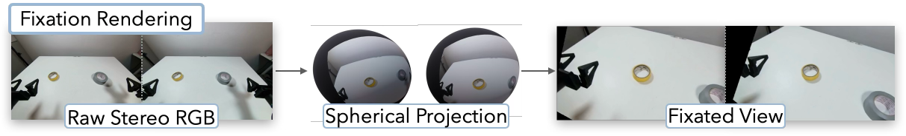
We simulate eye gaze by rendering stereo video through a spherical projection: based on the calibrated image and stereo geometry we can exactly render what two physical eyes would have seen, modulo missing data outside the image. This allows us to train RL policies to control gaze based on a variety of rewards, detailed below.
Goal-conditioned gaze
Gaze induced by conditioning on yellow vs gray tape. 3D visualization done with simulated data, but the policy is trained on real data. The red dot represents the current fixation point, which is controlled by the RL agent in 3D. Foveated viewpoints are rendered centered on this point.
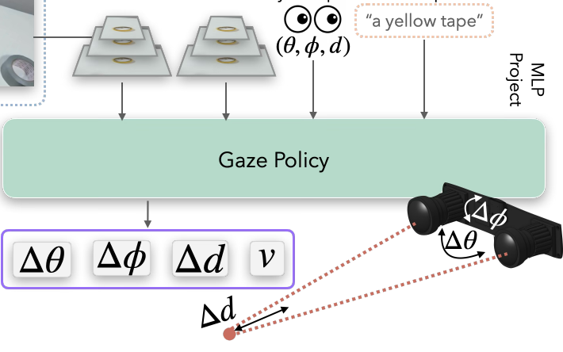
We first train a gaze policy that continuously servos the 2 eyes to fixate on a target object in 3D. The policy uses a transformer decoder architecture. It takes in foveated input views, the current eye proprioception, and a goal to look at, and outputs eye motion. We train it with PPO with a dense reward derived from extracting 3D object locations with foundation models and supervising with Euclidean error.
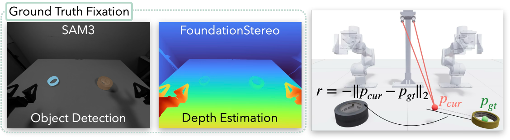
Sequencing gaze for manipulation

Once we have a gaze policy that can look at objects of interest, we need to be able to choose at what stage of the task to look at each object [NS: maybe instead, "choose what object to look at during each stage of the task."]. This is also learned via RL, using the BC-RL framework we proposed in EyeRobot. During this phase, we freeze the goal-conditioned gaze policy and train a lightweight target selector with RL to output a distribution over target objects to look at at each timestep. The target selector is co-trained at the same time [NS: maybe just with?] with the BC gripper policy and rewarded with the BC policy's prediction accuracy. The BC policy is a standard ACT-style transformer decoder trained with a regression objective. We opt for regression because of its training speed and because [NS: because repeated] we have high-quality non-diverse data, but the framework only assumes access to some computable offline error metric. With diffusion models, one could use action reconstruction error, or even distributional measures like sample agreement!
Take a look at the probabilities output from the target selector during each task here!
Compacting the data manifold with fixation
Loosely speaking, there's a few main ways to make a neural net better: 1) improve the architecture or optimization dynamics to better interpolate your data, 2) increase data manifold coverage by using more data, or 3) increase data manifold coverage by making the manifold itself more compact. Much of AVF's design is attempting the latter [NS: i don't think latter is right for a list of 3], reducing the complexity of the learning problem by representing manipulation relative to fixation2.
Fixation-centric observations
By swiveling eyes to a common point, AVF compacts the input image manifold by centering views on regions of interest. This is particularly noticable in pick and place tasks shown below.
Fixation-centric action frame
Experiments
We evaluate over 1,000 real-world rollouts across all tasks for AVF and its ablations. We compare against two strong baselines with the same architecture [NS: specify architecture? unclear if same as avf or as each other] and trained on the exact same demonstrations as AVF3. The first baseline uses the RGB stereo inputs directly ("No Gaze"), and the second uses one stereo image along with two wrist-mounted cameras ("Ego + Wrist"). Note that both baselines have a significant observability advantage, since AVF's field of view is such that it cannot see the entire stereo image at once. Both baselines are provided a full coverage view of the table, and with wrist cameras two additional high-resolution viewpoints of the gripper.
Randomly sampled successful trials. Click here to browse all trial videos.
 Marker
Marker
 Toaster
Toaster
 Wrench
Wrench
 Boba
Boba
 Tea
Tea
 Tape
Tape
 Pot
Pot
Camera comparisons

Success rate is the percentage of trials that complete the full task. Task progression is the average percentage of task stages completed in order. [NS: maybe consider moving this above graph to explain difference, feels hidden]
AVF significantly outperforms passive stereo
AVF beats passive stereo by a large margin, in aggregate +40% success rate. Interestingly, by using the same input images with active fixation, we can recover the performance gap between wrist-camera and wrist-free policies. [NS: its a little confusing to talk about wrist cameras in the stereo baseline, can this be moved somewhere else] Passive stereo struggles with spatial understanding; learning about 3D servoing is harder from a static perspective than from a gripper-centric perspective like wrist cameras or fixated eyeballs.
Passive stereo also lacks localized resolution necessary for precise tasks, particularly noticable in the near-0 performance on the marker task. Matching the resolution of AVF's fovea with uniform resolution would require over 10x the number of tokens.

AVF matches wrist cameras, and beats them under tool occlusion
When wrist cameras have a clear view, AVF matches the ego + wrist baseline. When they don't, the gap widens. We intentionally collected some tasks which are hard to see from the YAM's wrist cameras. In these tasks (boba and pot lid), ego + wrist policies must rely solely on the ego-centric camera for useful information [NS: remove and (, instead)] and so their performance collapses to about the same as static stereo. Different wrist camera designs like dual-cameras or fisheye views can alleviate these problems, but it's impossible to always maintain good observability. This also requires teleoperators to teleop the robot in an unnatural way, one that sometimes harms data quality because of unintuitive manipulation strategies required for observability.
Wrist camera viewpoints during boba and pot lid tasks. Grasping tools poses significant visibility challenges for wrist cameras. [NS: can we clarify that these are baseline rollouts (cuz they fail)]
AVF matches wrist cameras in precise tasks without tool occlusions
We also evaluate tasks with unobstructed wrist camera views: marker, tea, toaster, and wrench. These tasks require precise grasping and dexterous manipulation, making clear wrist camera views particularly helpful. Even on these tasks, AVF matches or exceeds the performance of the wrist camera baselines.
Distractor objects
We evaluated 3 tasks with unseen distractor objects scattered throughout the workspace. All comparisons use the exact same object positions to ensure comparability. Notice how in these examples the wrist camera often reaches for the largest or most distinct object in its view. Once it begins reaching the policy cannot recover since the wrist camera loses sight of the target. In contrast, AVF usually reaches for the correct object.
Simulated Eval
We found it extremely helpful for project development to build a MuJoCo twin of the YAM arms for high-volume, low-noise evaluations. Our goal here was not sim-to-real transfer, but rather a clean simulation-only benchmark that replicates as closely as possible the real world pipeline. We built a VR teleoperation platform using the same GELLO leader arms as real teleop, and designed 6 tasks by importing assets from SAM-3D. Task stage success is labeled based on programatic physics checks. [NS: we should mention we had 2 overlapping tasks (tape and pot)]
We train models on these simulated-only tasks with the exact same method, hyperparameters, camera parameters, and robot positions as real; the method does not leverage any simulated information besides what is available in real.

Ablations
Stereo and foveated vision
Ablating either stereo inputs or foveal inputs harms policy performance. Take a look at the sankey diagrams for a stage-by-stage breakdown; the failure cases of these ablations tend to cluster around stages requiring precision like capping the marker, or pulling out the toaster oven tray. Interestingly, boba performance was unaffected which we think was because the most precise phase of inserting the straw was performed near the stereo camera, making any gains from foveation less beneficial.

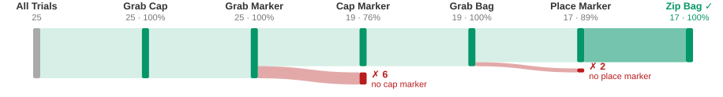
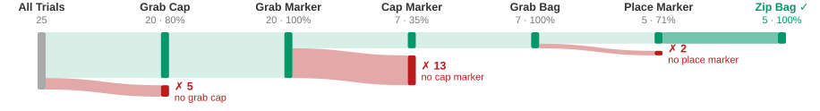
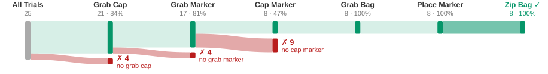
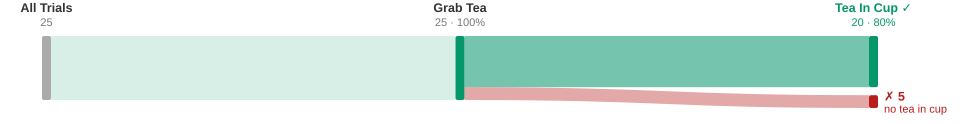
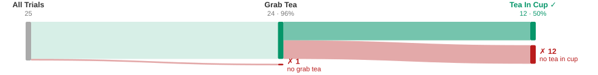
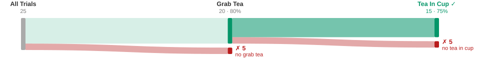
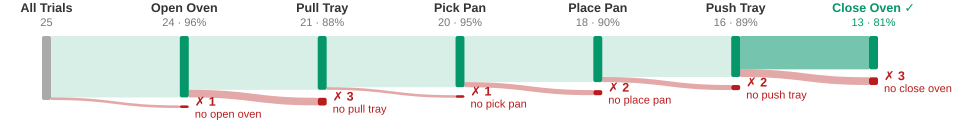
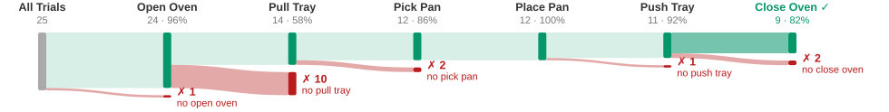
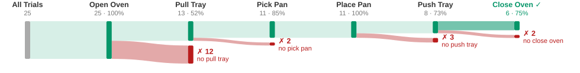
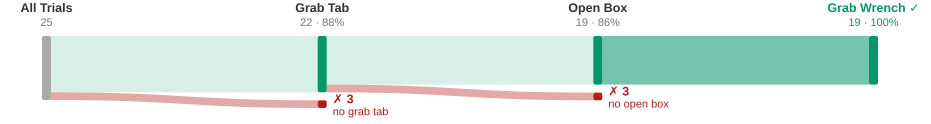
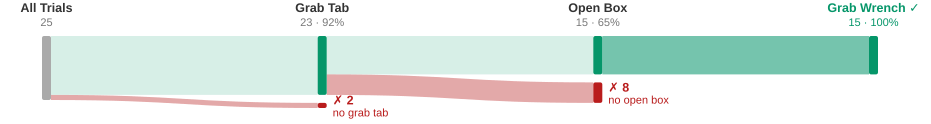
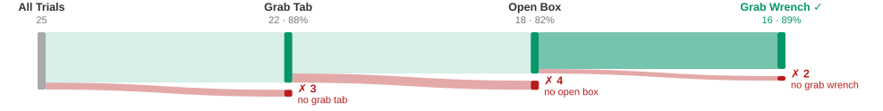
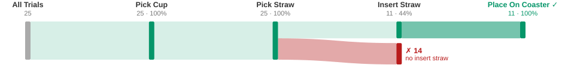
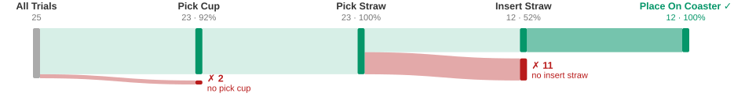
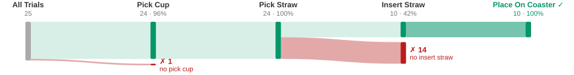
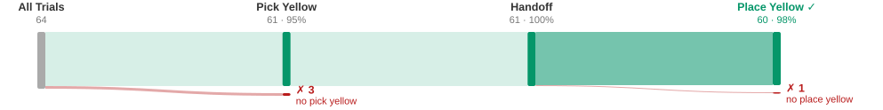
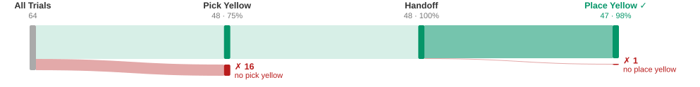
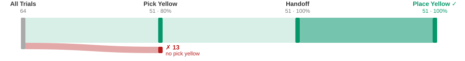
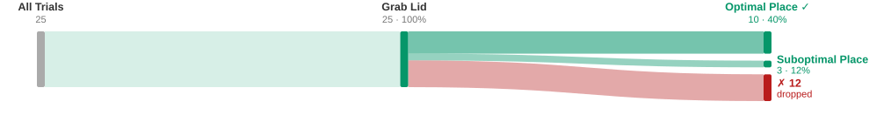
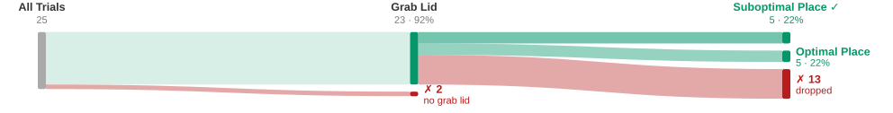
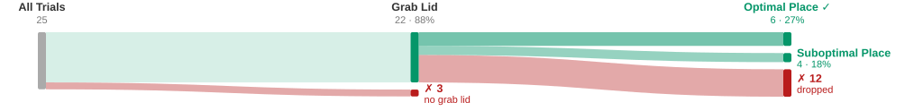
Partial successes of ablations visualized as Sankey diagrams.
Gaze-centric actions
Citation
If you use this work or find it helpful, please consider citing: (bibtex)
@inproceedings{[CITEKEY],
title={[PAPER FULL TITLE]},
author={[Author One and Author Two and ...]},
booktitle={[Venue]},
year={[Year]},
url={[Paper URL]}
}